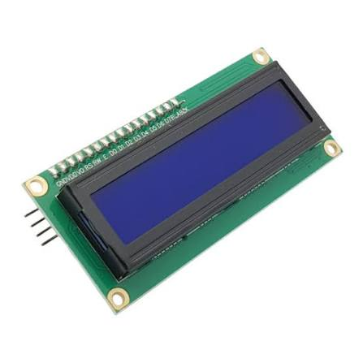

Màn hình LCD 1602 là giải pháp hiển thị văn bản, thông số cảm biến chữ đen nền xanh dương cực kì sắc nét. Đã tích hợp sẵn mạch I2C giúp giảm số lượng dây kết nối từ 16 chân xuống còn 4 chân.
| Số ký tự hiển thị | 16 ký tự x 2 dòng |
|---|---|
| Điện áp hoạt động | 5V DC |
| Màu sắc hiển thị | Chữ trắng / Nền xanh dương rực rỡ |
| Giao tiếp kết nối | I2C (SDA, SCL) sử dụng IC driver PCF8574 |
| Địa chỉ I2C mặc định | 0x27 hoặc 0x3F (Có thể thay đổi bằng hàn jump) |
| Điều chỉnh độ tương phản | Tích hợp sẵn biến trở vi chỉnh màu xanh lam ở lưng mạch I2C |
Màn hình LCD 1602 thông thường cần đến 16 chân kết nối vật lý với vi điều khiển, làm tiêu tốn rất nhiều tài nguyên chân I/O và đi dây vô cùng phức tạp. Sản phẩm LCD 1602 tích hợp module chuyển đổi giao tiếp I2C tại cửa hàng chúng tôi đã giải quyết triệt để vấn đề này.
Sử dụng giao thức truyền nhận dữ liệu I2C, màn hình chỉ sử dụng đúng 2 chân tín hiệu (SDA và SCL) để giao tiếp, giúp bạn thoải mái kết nối thêm nhiều cảm biến khác lên bo mạch Arduino của mình.